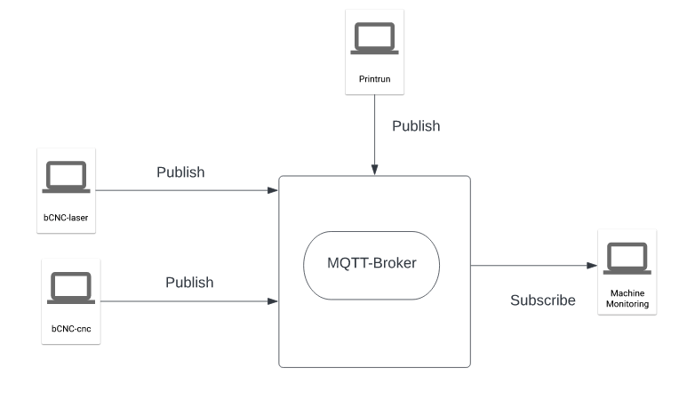
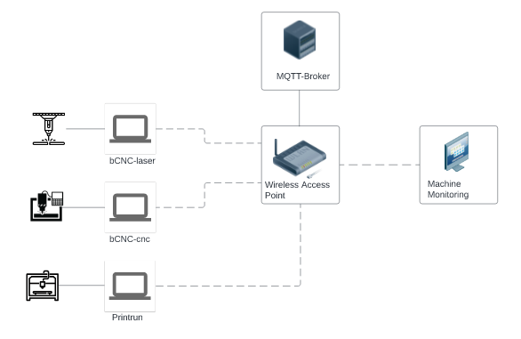

Open Source
Machine Monitoring
Pop-up Factory · MQTT · Fab lab machines

Open source software to monitor three machines in a pop-up factory:
- Laser cutter — OLSK Small Laser
- CNC router — OLSK Small CNC
- 3D printer — OLSK Small 3D Printer
Features
- Machine states — idle, pause, run, or job done
- Power consumption in watts
- Loaded G-code file name
- Job start and end times
- Summary table of completed jobs
Data from all three machines is saved to two CSV files: one for machine states with timestamps, and one for job details including job ID, G-code path, start time, and end time.
Architecture
The system uses an MQTT broker (Mosquitto) to collect data from modified bCNC (GRBL) and Printrun (Marlin) clients, which publish machine events to topics such as inmachines/cnc/state and inmachines/3dprinter/filename.

MQTT protocol diagram

Network diagram
Requirements
- MQTT broker server (e.g. Mosquitto on Ubuntu)
- bCNC for CNC/laser machines running GRBL
- Printrun for 3D printers running Marlin
Project Files
Credits
Developed at InMachines Ingrassia GmbH. Development and programming by Marcello Tania.
License
Software: GNU Affero General Public License (AGPL). Documentation and media: CC BY-SA 4.0.